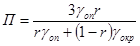
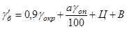
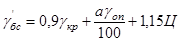
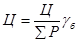

МИНИСТЕРСТВО
АВТОМОБИЛЬНОГО ТРАНСПОРТА
И ШОССЕЙНЫХ ДОРОГ РСФСР
УТВЕРЖДЕНЫ
Министерством автомобильного
транспорта и шоссейных дорог
РСФСР
4
марта 1965 г.
УКАЗАНИЯ
ПО
ПРИМЕНЕНИЮ
КЕРАМЗИТОБЕТОНА
В
АВТОДОРОЖНЫХ МОСТАХ
ВСН 28-65
Минавтошосдор
РСФСР
ИЗДАТЕЛЬСТВО «ТРАНСПОРТ»
Москва 1965
Настоящие Указания содержат требования к материалам для керамзитобетона, физико-механические свойства, нормативные и расчетные характеристики керамзитобетона, а также рекомендации по подбору его состава, технологии применения, контролю и оценке качества элементов автодорожных мостов из керамзитобетона.
Указания предназначены для применения при проектировании и строительстве обычных и предварительно напряженных керамзитобетонных пролетных строений с пролетами до 30 и применительно к действующим типовым проектам, а также звеньев водопропускных труб.
Указания составлены дорожно-транспортной научно-исследовательской лабораторией при МАДИ под руководством заведующего кафедрой строительного производства и конструкций МАДИ, д-ра техн. наук, проф. И.Г. Иванова-Дятлова на основании результатов научных исследований, проведенных кафедрой.
|
МИНИСТЕРСТВО |
Ведомственные строительные нормы |
ВСН 28-65 |
|
Указания по применению керамзитобетона в автодорожных мостах |
1. Для изготовления бетонных и железобетонных элементов искусственных сооружений, сооружаемых на автомобильных дорогах, могут быть применены как обычный, так и керамзитовый бетоны.
2. Керамзитобетоном называют легкий бетон, составленный из смеси керамзитового гравия или щебня, керамзитового или кварцевого песка, цемента и воды. Он легче бетона на тяжелых заполнителях и, следовательно, транспортабельнее и экономичнее.
3. По назначению керамзитобетон делится на три группы:
конструктивный - для несущих железобетонных и бетонных конструкций с объемным весом в высушенном состоянии не более 1900 кг/м3 и прочностью от 150 до 500 кГ/см2;
конструктивно-теплоизоляционный - для наружных стеновых конструкций с объемным весом от 900 до 1400 кг/м3 и прочностью от 50 до 125 кГ/см2;
теплоизоляционный - для теплоизоляционных элементов конструкций с объемным весом от 500 до 900 кг/м3 и прочностью от 10 до 35 кГ/см2.
В настоящих Указаниях рассматривается только конструктивный керамзитобетон.
4. Керамзитобетон при меньшем объемном весе по сравнению с обычным бетоном обладает достаточной сжимаемостью и растяжимостью, что позволяет широко применять керамзитожелезобетонные конструкции в сейсмических районах и в районах жаркого климата.
5. Конструктивный керамзитобетон применяется в автодорожном строительстве для водопропускных труб, опор и пролетных строений мостов с обычной и предварительно напряженной арматурой.
|
Внесены дорожно-транспортной научно-исследовательской лабораторией при МАДИ |
УТВЕРЖДЕНЫ |
Срок введения |
6. Конструктивный керамзитобетон, применяемый в автодорожном строительстве, должен удовлетворять следующим требованиям (табл. 1).
Таблица 1
|
Марка бетона |
Структура |
Морозостойкость |
||
|
число выдерживаемых циклов, не менее |
коэффициент морозостойкости, не менее |
|||
|
1700 |
150, 200 |
Плотный |
200 |
0,75 |
|
1800 |
250, 300 |
200 |
0,75 |
|
|
1900 |
350, 400, 500 |
300 |
0,75 |
|
Примечание. Степень морозостойкости определяют по ГОСТ 4800-59. Для климатических условий, соответствующих среднемесячной температуре наиболее холодного месяца ниже - 15 °С, число выдерживаемых циклов должно быть не менее 300.
7. Заполнителями конструктивного керамзитобетона являются керамзитовый гравий, керамзитовый песок, кварцевый песок и смесь кварцевого и керамзитового песков. Керамзитовый гравий должен удовлетворять требованиям ГОСТ 9759-61; кварцевый песок - требованиям ГОСТ 10268-62.
8. В зависимости от предельной крупности зерен керамзитовый заполнитель, применяемый для конструктивного керамзитобетона, делится на фракции:
Размер фракций, мм
|
Мелкий |
} |
гравий (крупный заполнитель) |
5-10 |
|
Средний |
10-20 |
||
|
Крупный керамзитовый |
} |
песок (мелкий заполнитель) |
1,2-5 |
|
Мелкий керамзитовый |
0,1-1,2 |
Допускается отклонение от предельных размеров зерен керамзита в партии не более 10 % по весу. Для несущих конструкций мостов разрешается применять несортированный рядовой керамзитовый гравий с зернами размером от 5 до 20 мм, если пробными замесами будет доказана возможность получения на этом заполнителе керамзитобетонов заданных марок.
Зерновой состав песка с модулем крупности 2,10-3,25 должен соответствовать кривой просеивания (рис), выбираемой при проектировании состава бетона в пределах, указанных ниже:
|
Размер отверстий контрольных сит, мм |
5,0 |
2,5 |
1,25 |
0,63 |
0,315 |
0,14 |
|
Полный остаток на контрольных ситах, % по весу |
0 |
0-20 |
15-45 |
35-70 |
70-90 |
90-100 |
9. В зависимости от насыпного объемного веса (в высушенном состоянии до постоянного веса) и прочности на сжатие керамзитовый заполнитель для конструктивных бетонов делится на марки, приведенные в табл. 2.
Таблица 2
|
Насыпной объемный вес |
Крупность зерен, мм |
Прочность, кГ/см2 |
||
|
Минимальный, кг/м3 |
Максимальный, кг/м3 |
|||
|
600 |
501 |
600 |
5-20 |
30 |
|
700 |
601 |
700 |
5-10 |
40-45 |
|
900 |
801 |
900 |
5-10 |
50 |
Прочность керамзитового гравия (фракций от 5 до 20 мм) определяется по методу стального цилиндра диаметром 120 мм; для керамзитобетона марок 150-250 она должна быть не менее 20 кГ/см2, для керамзитобетона марок 300-500 не менее 40 кГ/см2 (ГОСТ 9758-61).
10. Зерновой состав керамзита при определении насыпного объемного веса смеси должен отвечать следующим требованиям (табл. 3).
11. Керамзитовый гравий должен отвечать следующим требованиям: поверхность зерен керамзитового гравия должна быть равномерно обожжена; зерна в изломе должны иметь однородную мелкопористую ячеистую структуру с отдельными ячейками не более 2 мм; наличие зерен керамзита с невспученной сердцевиной не допускается; содержание в керамзите эллипсоидных зерен, наибольший размер которых в 2 и более раза превышает их наименьший диаметр, не должен превышать 15 % по объему; керамзит должен обладать устойчивостью против распада при испытании пропариванием по ГОСТ 2778-50; водопоглощение зерен керамзита по истечении 30 мин не должно быть более 15 % (по весу); керамзитовые гравий и песок не должны быть загрязнены случайными примесями и должны выдерживать не менее 15 циклов попеременного замораживания и оттаивания в воде с потерей в весе при этом не более 10 %; керамзитовый гравий не должен содержать включений извести, приводящих к разрушению его зерен после кипячения в течение 4 ч; объемный вес заполнителя, его зерновой состав, морозостойкость, влажность, водопоглощение должны соответствовать условиям поставки, которые устанавливаются соглашением сторон.
Таблица 3
|
Предельная крупность, мм |
||
|
10 |
20 |
|
|
Содержание смеси, и по объему |
||
|
5-10 |
100 |
40 |
|
10-20 |
- |
60 |
Таблица 4
|
Объемный вес сухого керамзитового песка, кг/м3 |
||
|
минимальный |
максимальный |
|
|
500 |
- |
500 |
|
600 |
501 |
600 |
|
800 |
601 |
800 |
|
1000 |
801 |
1000 |
|
1200 |
1001 |
1200 |
Примечание. Объемный вес рядового песка определяется при зерновом составе, соответствующем кривой, приведенной на рисунке.
12. Керамзит поставляется на заводы железобетонных конструкций в воздушно-сухом состоянии с влажностью не более 5 % по весу.
13. Керамзит хранят на спланированных площадках с бетонным полом, под навесами, предохраняющими его от увлажнения. Смешение керамзита разных сортов и фракций не допускается. Если керамзит хранится на открытых складах и его влажность превышает 5 %, его необходимо подсушивать в сушильных барабанах или иным способом до влажности не более 5 %.
14. Керамзитовый песок по насыпному объемному весу делится на следующие марки (табл. 4).
До освоения производства керамзитового песка допускается применять в качестве мелкой фракции дробленый керамзит.
15. Керамзитовые заполнители испытывают по ГОСТ 9758- 61 «Заполнители пористые неорганические для легких бетонов. Методы испытаний».
16. Керамзитобетон приготовляется с применением портландцемента с прочностью не ниже 500 кГ/см2.
17. Цемент для приготовления керамзитобетона выбирают с учетом условий твердения (нормальные условия или тепловая обработка) в соответствии с рекомендациями, приведенными в табл. 5.
Таблица 5
|
Рекомендуемый цемент |
Марка цемента |
|
|
В естественных условиях |
Быстротвердеющий портландцемент |
Через сутки Rц = 200 кГ/см2 Через 3 суток Rц = 300 кГ/см2 |
|
Высокомарочный портландцемент |
Марка 500 и более |
|
|
Электронагрев или пропаривание на стенде при t = 70 °С и менее |
Быстротвердеющий портландцемент |
Через сутки Rц = 200 кГ/см2 |
|
Портландцемент |
Марка 500 и более |
|
|
Электронагрев или пропаривание в стационарных камерах при t = от 80° до 100 °С |
Портландцемент |
Марка 500 и более |
18. Для улучшения подвижности керамзитобетонных смесей могут применяться поверхностноактивные добавки (мылонафт, сульфитно-спиртовая барда и др.), количество которых принимается в размере 0,15-0,25 % от веса цемента в расчете на сухое вещество добавки.
19. Для ускорения твердения уложенной бетонной смеси в бетонные конструкции и в конструкции с нерасчетной арматурой разрешается вводить химические добавки (хлориды): хлористый кальций, хлорное железо и другие, количество которых не должно превышать 2 % от веса цемента. Для железобетонных элементов мостов и труб применять добавки, ускоряющие твердение, не разрешается.
20. Добавки, применяемые для улучшения подвижности, а также для ускорения твердения бетона, должны удовлетворять требованиям действующих ГОСТ и технических условий.
21. Вода для затворения бетонной смеси не должна содержать вредных примесей, препятствующих нормальному схватыванию и твердению вяжущего бетона. Для приготовления и поливки керамзитобетона может применяться вода, пригодная для питья и соответствующая ГОСТ 2874-54 «Вода питьевая».
22. Подбор состава керамзитобетонной смеси состоит в том, чтобы на имеющихся сортах керамзитового гравия, кварцевого и керамзитового песка, цемента и воды обеспечить:
заданный предельный объемный вес керамзитобетона в сухом состоянии или при монтажной влажности;
заданную марку или прочность керамзитобетона к определенному сроку;
однородность и укладываемость бетонной смеси при наименьшем расходе цемента.
23. Для подбора состава керамзитобетона должны быть заданы:
предельный объемный вес и требуемая марка или прочность бетона к определенному сроку;
условия укладки бетонной смеси;
режим твердения бетонной смеси, а при необходимости требуемая морозостойкость.
24. Предварительный подбор составов керамзитобетонной смеси может производиться любыми обоснованными способами, обеспечивающими наименьший расход цемента: по графикам, таблицам или расчетно-теоретическим путем. Однако, учитывая большую неоднородность керамзита и разные марки цемента, окончательное назначение рабочего состава должно производиться лишь по результатам испытаний образцов, изготовленных из пробных замесов бетонной смеси.
25. При назначении показателей подвижности керамзитобетонной смеси, в зависимости от типа бетонируемой конструкции и способов укладки бетонной смеси, рекомендуется пользоваться следующими данными, которые подлежат в дальнейшем уточнению в производственных условиях:
Показатель жесткости, сек
Массивные неармированные конструкции и конструкции
с редко расположенной арматурой 60-30
Плиты, каркасные балки, колонны, стойки и стенки
с нормальным насыщением арматурой 30-15
Предварительно напряженные пролетные строения, сильно
насыщенные арматурой 15-10
Пролетные строения, особенно насыщенные арматурой 10-5
Показатели подвижности устанавливаются в соответствии с ГОСТ 10180-62 («Бетон тяжелый». Методы определения прочности») сразу после выгрузки бетонной смеси из бетономешалки, а по необходимости также дополнительно непосредственно перед укладкой смеси в опалубку или в форму. При этом жесткость в секундах определяется при амплитуде колебаний рабочей части 0,35 мм и при частоте 2800 колебаний/мин.
26. В зависимости от назначения для приготовления керамзитобетона рекомендуется применять заполнители, указанные в табл. 6.
27. Предельная крупность керамзитового гравия должна быть:
Таблица 6
|
Рекомендуемый объемный вес, кг/м3 |
Общий максимальный расход заполнителя в м3 на 1 м3 бетона |
Предельная крупность керамзитового гравия, мм |
Доля песка в общем объеме смеси мелкого и крупного заполнителя при использовании гравия |
|||
|
керамзитовый гравий |
песок |
мелкий и крупный заполнитель |
двухфракционный мелкий и крупный |
|||
|
150-200 |
500 |
1250* |
2 фракции (20 мм) |
0,50-0,60 |
||
|
250 |
600 |
1350* |
1,4 |
1,5 |
² |
0,50-0,60 |
|
300 |
700 |
1500 |
² |
0,50-0,60 |
||
|
Более 300 |
800 |
1560 |
1 фракция (10 мм) |
0,40-0,50 |
||
____________
* Смешанный керамзитовый и кварцевый песок.
3/4 от наименьшего расстояния между стержнями арматуры (в свету);
1/3 от наименьшего размера конструкций;
20 мм для конструктивного керамзитобетона марок 150-250.
28. Для предварительных расчетов максимальный общий расход по объему крупных и мелких заполнителей на 1 м3 уложенного бетона принимается по табл. 7.
Таблица 7
|
Предельная крупность зерен, мм |
||
|
10 |
20 |
|
|
зерновой состав заполнителей в % от суммы объемов отдельных фракций смеси конструктивного керамзитобетона |
||
|
До 1,2 |
25 |
20 |
|
1,2-2,5 |
20 |
15 |
|
2,5-5,0 |
10 |
15 |
|
5,0-10,0 |
45 |
20 |
|
10,0-20,0 |
- |
30 |
При заданном объемном весе сухого керамзитобетона и принятом расходе цемента расход по весу заполнителей на 1 м3 керамзитобетона определяется по табл. 8 и должен быть не более:
3 < (gб - 1,15Ц),
где 3 - общий расход крупного заполнителя, кг/м3;
gб - требуемый объемный вес сухого керамзитобетона, кг/м3;
Ц - расход цемента, кг/м3.
29. Назначение зернового состава смеси крупных и мелких заполнителей (или содержание песка в смеси заполнителей) в первую очередь рекомендуется производить из условий полного заполнения раствором межзерновой пустотности крупного заполнителя, если при этом объемный вес керамзитобетона находится в заданных пределах.
Для приготовления первого исходного замеса содержание песка в смеси заполнителей может приниматься в пределах, указанных в табл. 8, и в дальнейшем принятый расход песка уточняется в процессе подбора состава керамзитобетона.
При общем расходе крупного и мелкого заполнителя 3 кг/м3 и принятой доле песка по объему от общего объема заполнителей r расход песка П в кг/м3 определяется по формуле:

а расход крупного заполнителя по формуле:
Кр = 3 - П,
где gon и gокр - объемные веса песка и крупного заполнителя в кг/м3 (в насыпном состоянии).
Зерновой состав смеси мелких и крупных заполнителей может быть прерывистым, т.е. с недостатком отдельных фракций, если эффективность применения такой смеси подтверждается технико-экономическим расчетом, составленным по данным подбора состава бетона.
30. Состав керамзитобетона подбирают на сухих заполнителях. При выдаче же рабочего состава бетона в дозировочное отделение лаборатория вносит коррективы в подобранный состав, учитывающие фактическую влажность заполнителей.
31. Ориентировочные расходы цемента марки 500, керамзитового гравия, песка, рекомендуемое водоцементное отношение и объемный вес керамзитобетона в высушенном состоянии и в условиях монтажной влажности для керамзитобетонных мостовых конструкций с обычной и предварительно напряженной арматурой приведены в табл. 8.
32. Возможность получения на данных заполнителях и принятом расходе цемента керамзитобетона с требуемым объемным весом устанавливается опытными замесами. Для предварительных расчетов ожидаемый максимальный объемный вес керамзитобетона в сухом состоянии может определяться по формуле:
gбс = Vкр gокр + Vп gоп + 1,15Ц,
где gбс - ожидаемый максимальный объемный вес сухого керамзитобетона, кг/м3;
gокр и gоп - объемные веса крупного и мелкого заполнителя кг/м3;
Vкр и Vп - расход крупного и мелкого заполнителя на 1 м3 уложенного бетона, м3 (см. табл. 6);
Ц - расход вяжущего на 1 м3 уложенного керамзитобетона (табл. 8), кг.
Уменьшение объемного веса керамзитобетона производится: уменьшением расходов цемента за счет применения вяжущих более высоких марок, более интенсивным уплотнением бетонной смеси при ее укладке, что позволяет увеличить расход в бетоне более легкого крупного заполнителя.
Таблица 8
|
Расход цемента марки 500 |
Керамзит |
Песок |
В/Ц |
Объемный вес керамзитобетона, кг/м3 |
|||||
|
объемный вec, кг/м3 |
Прочность, кг/см2 |
расход, м3 |
объемный вес, кг/м3 |
Расход, м3 |
сухого |
монтажный |
|||
|
150 |
280-320 325-350 |
400-500 |
16-20 |
0,90 |
Смешанный 1300 |
0,45 |
0,52 0,60 |
1480 |
1550 |
|
200 |
315-350 335-380 |
500 |
20-25 |
0,85-0,90 |
Смешанны и 1375 |
0,48 |
0,50 0,56 |
1620 |
1700 |
|
250 |
340-390 370-420 |
500-600 |
25-30 |
0,80-0,85 |
Кварцевый 1500 |
0,50 |
0,48 0,50 |
1700 |
1775 |
|
300 |
380-420 400-450 |
600 |
30-35 |
0,75-0,80 |
1500 |
0,53 |
0,46 0,50 |
1750 |
1800 |
|
400 |
440-480 470-500 |
600-700 |
40-45 |
0,85-0,70 |
1550 |
0,56 |
0,46 0,48 |
1800 |
1900 |
|
500 |
500-525 525-550 |
700-800 |
50-55 |
0,57-0,65 |
1600 |
0,55 0,60 |
0,42 0,45 |
1850 |
1950 |
Примечания: 1. В числителе указаны расходы цемента и В/Ц для бетонных смесей с показателями жесткости 60-30 сек, в знаменателе - для пластичных смесей 30-15 сек.
2. При применении цементов марки 600 расход цемента уменьшать на 10 %.
3. Для керамзитобетона марок 300-500 цементы марок 400 не рекомендуются.
4. Для марок бетона 350 и 400 рекомендуется принимать в первом случае средние данные между марками 300 и 400, во втором - между 400-500.
Определение условий получения на данных заполнителях плотного керамзитобетона с наименьшим объемным весом путем повышения расхода крупного заполнителя может быть ориентировочно произведено по формулам или путем подсчета абсолютных составляющих в 1 м3 уложенной керамзито-бетонной смеси.


где gб’ - ожидаемый объемный вес бетона после укладки, кг/м3;
g’бс - ожидаемый объемный вес сухого бетона, кг/м3;
а - объемы пустот в керамзитовом крупном заполнителе, % (по объему);
gокр, gоп - объемный насыпной вес сухого крупного и мелкого заполнителя, кг/м3.
33. Расходы воды для приготовления керамзитобетона принятого состава устанавливаются подбором водосодержания бетонной смеси по заданному показателю ее подвижности.
При заданном показателе подвижности бетонной смеси ориентировочный средний расход воды для предварительных расчетов (при расходе цемента до 400 кг/м3) допускается по данным табл. 9. При большем расходе цемента расход воды определяется по опытным замесам.
Таблица 9
|
Расход воды в л/м3 дли керамзитобетона, уложенного |
||||
|
на кварцевом песке |
на керамзитовом песке |
|||
|
при объемном (насыпном) весе керамзита, кг/м3 |
||||
|
500-600 |
700-900 |
500 |
800 |
|
|
30-15 |
195-210 |
185-200 |
265-290 |
255-280 |
|
15-10 |
215-230 |
205-220 |
315-340 |
295-330 |
|
10-5 |
225-240 |
215-230 |
340-365 |
330-355 |
Ориентировочный расход воды на приготовление керамзитобетона на сухом керамзитовом гравии с предельной крупностью зерен 20 мм и на песке средней крупности приведен в табл. 9.
34. Окончательный подсчет материалов на 1 м3 керамзитобетона, а также их расход на один замес производят по фактическому коэффициенту выхода, полученному при опытном изготовлении образцов с учетом фактической влажности заполнителей. Учитывая изменения подвижности бетонной смеси в период между ее приготовлением и укладкой, лаборатория указывает требуемые показатели подвижности в обоих случаях.
Расход цемента Ц в кг на 1 м3 уложенного бетона можно определить по формуле:

где Ц - расход цемента на данный замес, кг;
åР - сумма расходов материалов на данный замес (включая воду), кг;
gб - объемный вес свежеуложенного бетона, кг/м3.
Расход заполнителей и воды определяется по указанной формуле с заменой расходов в кг этих материалов на данный замес.
35. Дозирование материалов при приготовлении бетонной смеси производится строго в соответствии с указанием лаборатории, которая выдает цеховому техническому персоналу карточку производственного состава бетонной смеси, утвержденной главным инженером завода (полигона).
Точность дозирования должна быть:
цемента тонкомолотых добавок (по весу) .............................................................. ±1 %,
заполнителей (по объему или весу) ......................................................................... ±3 %
воды (по весу или объему) ........................................................................................ ±1 %
36. Керамзитобетонную смесь, как правило, приготовляют в бетономешалках принудительного действия. Заполнители бетонной смеси, приготовляемые в зимних условиях, должны иметь в момент загрузки в бетономешалку положительную температуру (но не более +50 °С), а вода для затворения - температуру не ниже +15 °С, но не более 70 °С. Смесь в момент ее выгрузки должна иметь температуру не ниже +10 °С.
37. Бетономешалку загружают в следующей последовательности: керамзит, песок и 2/3 воды от замеса с перемешиванием 1,0-1,5 мин, после чего в бетономешалку загружается цемент, 1/3 воды от замеса, в которой растворены поверхностноактивные добавки или ускорители твердения бетона.
38. Продолжительность перемешивания керамзитобетонной смеси зависит от качества керамзита, его предельной крупности, зернового состава, расхода цемента, типа и объема применяемых мешалок. Продолжительность перемешивания устанавливается опытным путем и должна составлять не менее 3 мин. Повышение интенсивности смешивания (без разрушения зерен керамзита) или увеличение его продолжительности до 5-8 мин позволяет уменьшить расход вяжущих на 5-10 %.
39. Режим виброуплотнения керамзитобетонной смеси, частота и амплитуда колебаний, продолжительность вибрирования выбирается в зависимости от степени уплотнения данной керамзитобетонной смеси. Примерный режим виброуплотнения керамзитобетонных изделий при частоте колебаний 1500-3000 в минуту: амплитуда колебаний 0,5-0,75 мм, продолжительность вибрирования 30-80 сек.
Амплитуда 0,75 мм относится к меньшей частоте вибрирования, 0,5 мм - к большей частоте вибрирования.
40. Ускорение твердения керамзитобетонных изделий осуществляется методом тепловой обработки при нормальном давлении или активизацией вяжущих с применением добавок - ускорителей твердения бетона.
Для керамзитобетона рекомендуются следующие методы ускорения твердения: контактный обогрев в закрытых формах, сухой прогрев под колпаками, электропрогрев и другие виды обогрева при температуре около 100 °С.
41. Процесс тепловой обработки изделий должен обеспечить прочность керамзитобетона:
а) при изготовлении в зимних условиях после испытания элементов, прогретых в камерах пропаривания к моменту укладки в штабеля на открытом воздухе, не менее 70 % от проектной марки бетона;
б) к моменту укладки штабеля в летних условиях, обеспечивающих дальнейший рост прочности элементов, не менее 50 % от проектной марки бетона;
в) к моменту отпуска со склада не менее 70 % от проектной марки (за исключением железобетонных свай всех типов и блоков предварительно напряженных пролетных строений, прочность бетона которых должна быть не менее 100 % от проектной).
42. Прогрев керамзитобетонных изделий при нормальном давлении должен производиться при следующем режиме:
а) повышение температуры в открытых формах должно быть не более 40 °С в 1 час, оптимальная температура от 80 °С до 90 °С (±5°) при относительной влажности, близкой к 100 %;
б) при прогреве в закрытых формах температура среды с начала подогрева поддерживается около 100-130 °С, а температура изделия около 100 °С;
в) выдерживание изделий в открытых формах при 80-90 °С в течение 12 ч; в закрытых формах после достижения бетоном температуры 100 °С - выдерживание в течение 5-6 ч;
г) продолжительность остывания изделий должна составлять 2-3 ч.
43. В зимних условиях изделия после пропаривания должны быть охлаждены в камерах или специальных помещениях до 25-30 °С. Ориентировочные режимы пропаривания в открытых формах керамзитобетонных изделий с объемным весом 1550-1950 кг/м3, изготовленных на портландцементе, при жесткой бетонной смеси 30-60 сек приведены в табл. 10.
Таблица 10
|
Продолжительность пропаривания в час (подъем температуры - изотермический прогрев - остывание) для достижения 70 % прочности от К28 при температуре |
||
|
80 °C |
100 °С |
|
|
До 100 |
2 + 8 + 1 |
2,5 + 4 + 1,5 |
|
100-200 |
2,5 + 8 + 1,5 |
3 + 4 + 2 |
|
200-400 |
3,5 + 9 + 2 |
4 + 5 + 3 |
При применении пластичных бетонных смесей с жесткостью менее 30 сек продолжительность изотермического прогрева изделий повышается на 1 ч, а при жесткости более 30 сек уменьшается на 1-2 ч.
44. При выдерживании изделий из керамзитобетона на стенде в условиях естественного твердения (при температуре воздуха не менее +10 °С) необходимо предохранять бетон от действия лучей в жаркую погоду и от увлажнения дождем; для этого открытые поверхности бетона следует в течение 1-3 суток накрывать влажным брезентом и др.
Бетон, изготовленный на портландцементе, твердеющий в сухое жаркое время, поливают ежедневно не менее 3 раз в сутки в течение 7 дней.
45. На заводе (полигоне), где изготовляются изделия из керамзитобетона, должен осуществляться систематический пооперационный контроль качества, который включает:
а) испытание исходных материалов, применяемых для приготовления бетонной смеси, а также арматуры в соответствии с действующими стандартами и техническими условиями;
б) контроль за выполнением установленной технологии производства (в том числе за приготовлением и укладкой бетонной смеси, арматуры и закладных частей, проверку соблюдения принятого режима твердения бетона, а также контроль за работой технологического оборудования и измерительных приборов;
в) испытание бетонной смеси и бетонных образцов по затвердению бетона;
г) взвешивание и испытание изделий путем нагружения их контрольной нагрузкой или при помощи ультразвука;
д) определение влажности бетона в изделиях, пробы в соответствии с техническими условиями на данный вид изделия.
46. Контроль за выполнением установленной технологии приготовления бетонных смесей лабораторией не реже 2 раз в смену с отбором проб бетонной смеси от каждого состава для определения удобоукладываемости и объемного веса.
47. Приемку и контроль за качеством готовых изделий из керамзитобетона осуществляет ОТК согласно утвержденному положению об отделе технического контроля завода мостовых железобетонных конструкций.
48. Прочность керамзитобетона в сборных мостовых конструкциях определяют при помощи ультразвука без разрушения элементов по специальной инструкции.
49. Методы проектирования и расчета конструкций из керамзитобетона такие же, как и конструкции из обычного бетона. Они отличаются лишь некоторыми физическими, прочностными и деформативными характеристиками, которые следует принимать в расчете вместо аналогичных характеристик обычного бетона по нормам проектирования и расчета железнодорожных, автодорожных и городских мостов (СН 200-62).
50. Объемный вес керамзитобетона зависит от объемного веса керамзита и вида песка. Для керамзитобетонов марок 150-500 на кварцевом песке или на смеси кварцевого и керамзитового песков ориентировочный объемный вес керамзитобетонов приведен в табл. 11.
Таблица 11
|
Ориентировочный объемный вес керамзитобетона марок |
|||||||
|
150 |
200 |
250 |
300 |
350 |
400 |
600 |
|
|
0,5-0,6 |
1,5 |
1,6 |
1,65 |
- |
- |
- |
- |
|
0,6-0,7 |
1,6 |
1,65 |
1,70 |
1,75 |
1,80 |
- |
- |
|
0,7-0,9 |
- |
1,70 |
1,75 |
1,80 |
1,85 |
1,90 |
1,95 |
51. Коэффициент линейного расширения керамзитобетона при охлаждении, а также при нагреве в пределах от 0 до 100 °С принимается равным 0,00001. Деформация усадки керамзитобетона больше деформации усадки обычного бетона на 25 % при m < 0,5 % и на 15 % - при m > 0,5 %.
Величина усадки пропаренного керамзитобетона по сравнению с непропаренным не повышается.
При определении потерь натяжения в предварительно напряженной арматуре и прогибов балок при длительном действии нагрузок ползучесть керамзитобетона следует принимать аналогичной ползучести тяжелого бетона соответствующих марок с коэффициентами 1,15 для марок 150-200; 1,10 - для марок 300-500.
Для конструктивных керамзитобетонов марок 300-500 разрешается принимать значения коэффициентов линейного расширения, усадки и ползучести в соответствии с опытными данными.
52. Предельная сжимаемость керамзитобетона при осевом сжатии eсж принимается в зависимости от его марки:
Марка керамзитобетона 150 200 250 300 350 400 500
eсж´10-3 1,1 1,4 1,7 1,9 2,1 2,2 2,4
Предельная растяжимость изгибаемых элементов для керамзитобетона марок 150-200 составляет 0,0003; для марок 300-500 - 0,00025.
Коэффициент поперечных деформаций (коэффициент Пуассона) керамзитобетона марок 150-400 при напряжении до 0,5 Rпр составляет m = 0,20.
Разрешается принимать и другие коэффициенты деформаций керамзитобетона марок 150-500, обоснованные испытаниями образцов, изготовленных из местного керамзита.
53. При одинаковых марках керамзитобетона и бетона на тяжелых заполнителях сцепление арматуры с керамзитобетоном на 10 % выше, чем сцепление арматуры с тяжелым бетоном, поэтому дополнительные меры для увеличения анкеровки керамзитобетона в элементах конструкций не требуются.
54. Керамзитобетон может применяться и в покрытии проезжей части керамзитобетонных мостов с обязательным устройством защитного слоя.
55. Опыты показывают, что конструктивные плотные керамзитобетоны марок 150-500 без изменения форм и прочности на сжатие выдерживают не менее 200-кратного замораживания, так же как и бетоны на гранитном щебне.
Плотные керамзитобетоны на кварцевом песке оказываются менее водопроницаемыми, чем тяжелые бетоны, поэтому они могут быть рекомендованы для устройства напорных труб и гидроизоляции проезжей части мостов.
56. В заводских условиях при изготовлении сборных керамзитожелезобетонных конструкций с тщательным лабораторным контролем качества бетона, с использованием современных физических методов, в том числе и импульсного ультразвукового метода, контроля прочности при помощи построения тарировочных кривых КСП, коэффициент однородности керамзитобетона следует принимать по табл. 12.
Таблица 12
|
Коэффициенты однородности К при проектных марках бетона и условия работы |
||||
|
150-200 |
250-600 |
|||
|
А |
Б |
А |
Б |
|
|
Сжатие осевое и при изгибе |
0,60 |
0,55 |
0,65 |
0,60 |
|
Растяжение |
0,45 |
0,50 |
||
В табл. 13 даны расчетные сопротивления конструктивного керамзитобетона марок 150-500.
57. Начальные модули упругости керамзитобетона на кварцевом песке марок 150-500 даны в табл. 14.
Таблица 13
|
Условное обозначение |
Условия приготовления бетона |
Марки керамзитобетона |
|||||||||||||
|
150 |
200 |
250 |
300 |
350 |
400 |
500 |
|||||||||
|
Расчетные сопротивления керамзитобетона, кГ/см2 |
|||||||||||||||
|
а) для ненапряженного и предварительно напряженного керамзитожелезобетона |
|||||||||||||||
|
Сжатие осевое |
Rnp |
А |
66 |
88 |
115 |
140 |
165 |
190 |
240 |
||||||
|
Б |
60 |
80 |
105 |
130 |
150 |
170 |
215 |
||||||||
|
Сжатие при изгибе |
Rи |
А |
80 |
110 |
150 |
180 |
210 |
240 |
300 |
||||||
|
Б |
75 |
100 |
135 |
160 |
185 |
215 |
270 |
||||||||
|
Скалывание при изгибе |
Rск |
А и Б |
24 |
32 |
38 |
44 |
49 |
53 |
60 |
||||||
|
б) для предварительно напряженного керамзитожелезобетона |
|||||||||||||||
|
Сжатие осевое наибольшее |
Rтпр |
А |
- |
96 |
125 |
155 |
180 |
210 |
260 |
||||||
|
Б |
- |
85 |
115 |
140 |
165 |
190 |
235 |
||||||||
|
Сжатие при изгибе |
Rти |
А |
- |
120 |
155 |
190 |
225 |
250 |
310 |
||||||
|
Б |
- |
110 |
145 |
175 |
205 |
235 |
280 |
||||||||
|
Главные сжимающие напряжения |
Rгсп |
А |
- |
75 |
100 |
125 |
145 |
165 |
205 |
||||||
|
Б |
- |
70 |
90 |
110 |
130 |
150 |
185 |
||||||||
|
Главные растягивающие напряжения |
Rгрп |
А и Б |
- |
15 |
17 |
20 |
22 |
24 |
27 |
||||||
|
Растяжение |
Rрп |
А и Б |
- |
9 |
11,5 |
13,5 |
15 |
16 |
18 |
||||||
|
в) для ненапряженного керамзитожелезобетона |
|||||||||||||||
|
Условные главные растягивающие напряжения на уровне нейтральной оси |
Rгро |
А и Б |
19 |
21 |
28 |
32 |
35 |
37 |
24 |
||||||
|
Главные напряжения, при которых отгибы и хомуты ставятся конструктивно |
Rp |
А и Б |
5,6 |
7 |
8,3 |
9,5 |
10,5 |
11,5 |
13,5 |
||||||
|
Главные напряжения, передаваемые на части бетонных балок |
Rpг |
А и Б |
3,0 |
3,6 |
4,2 |
4,7 |
5,2 |
5,8 |
6,7 |
||||||
|
Растяжение осевое |
Rpо |
А и Б |
5,4 |
6,5 |
8,0 |
9,5 |
10,5 |
11 |
12,5 |
||||||
Примечания: 1. При расчете прочности предварительно напряженного элемента на воздействие строительных нагрузок (предварительное напряжение, монтаж, транспортирование и др.) расчетные сопротивления бетона, кроме Rтпр и Rти, повышаются на 10 %, в данном случае т1 = 1.
2. Расчетные сопротивлении Rтnp и Rти используются только при расчете на стойкость против образования продольных трещин в бетоне в процессе создания предварительных напряжений и монтажа, а величины Rnp - только при расчете трещиностойкости сечений, нормальных к оси элемента.
3. Расчетные сопротивления, помещенные в разделе «в» табл. 15, используются также для обычного железобетона в комбинированных конструкциях в сечениях, где не учитывается расчетом влияние предварительно напряженной арматуры.
4. При расчете автодорожных и городских мостов на колесную и гусеничную нагрузку величину Rгсп допускается повышать до Rпр.
5. Значения расчетных сопротивлений для условий приготовления бетона, обозначенных буквой «А», принимаются для бетонов, приготовленных на бетонных заводах или бетонных узлах, при условиях предварительного проектирования состава бетона с экспериментальной проверкой результатов подбора, автоматического и полуавтоматического дозирования составляющих бетона по весу и при наличии систематического контроля прочности и однородности бетона специальной лабораторией.
Таблица 14
|
Объемный вес, кг/м3 |
Е, кГ/см2 |
|
|
150 |
1600 |
140000 |
|
200 |
1700 |
175000 |
|
250 |
1700 |
195000 |
|
300 |
1750-1800 |
220000 |
|
350 |
1800 |
230000 |
|
400 |
1800 |
240000 |
|
- |
1850 |
250000 |
|
500 |
1900 |
275000 |
|
- |
1950 |
285000 |
Примечания: 1. Модули упругости керамзитобетона даны для изделий, твердеющих в пропарочных камерах. При нормальном твердении без пропаривания и хорошем уходе модули упругости керамзитобетона марок 150-500 повышаются на 10 %.
2. При определении деформации керамзитобетонных конструкций и учете потерь предварительных напряжений арматуры могут быть приняты и другие значения модулей упругости, если они будут обоснованы опытами.
СОДЕРЖАНИЕ